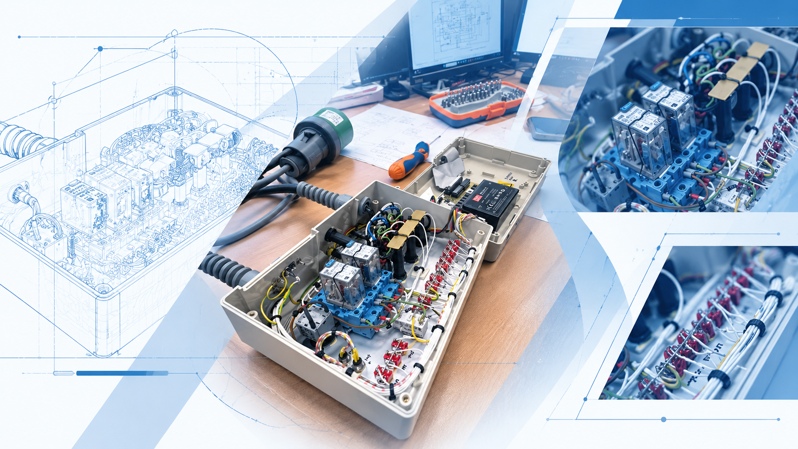
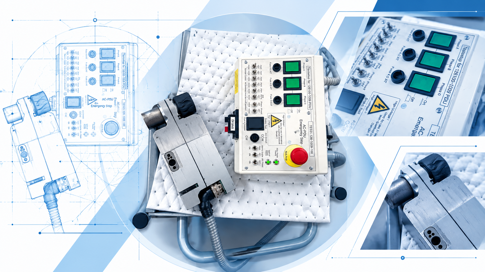
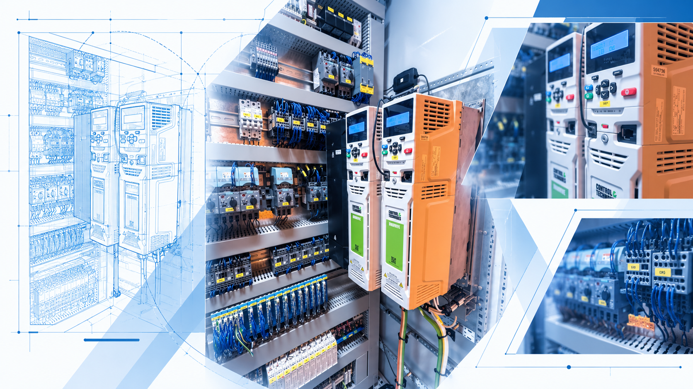
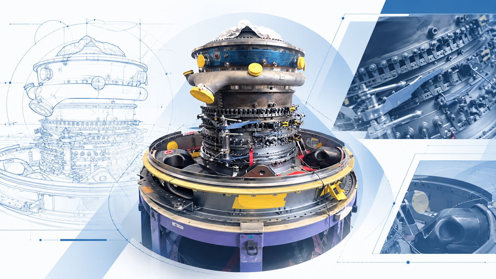

The objective
Develop a prototype for routine checks on an aircraft cargo Power Drive Unit.
Air France Industries / Internship / 2026
During my 2026 internship at Air France Industries, I joined the EL52 team under the supervision of Mathéo Lopes Boto.
My assignment: develop a prototype test device for routine checks on an aircraft cargo Power Drive Unit, combining embedded electronics, CAN communication and an LCD interface.
Explore the storyThe assignment
The project focused on an aircraft cargo Power Drive Unit: the equipment at the centre of the testing need.
I developed a prototype using an Arduino UNO R4, CAN communication and an LCD interface. The aim was to support routine equipment checks through a practical embedded testing device.
As a second-year engineering student at ENSEA, this was an opportunity to connect my studies with aircraft equipment and the work of an industrial team.
Scroll to explore the visuals and their story.

01 / Inside the assembly
An open enclosure with relays, connectors and routed wiring, photographed on the workshop bench.
Relays switch electrical circuits. Connectors link the assembly to other equipment; wiring carries power and control signals.
My internship assignment brought embedded electronics into aircraft-equipment testing. I developed the PDU testing prototype with an Arduino UNO R4, CAN communication and an LCD interface.
01 / A closer look
Relays, connectors, wiring. A closer look inside an electrical enclosure on the workshop bench.
My internship connected embedded electronics with the practical demands of aircraft-equipment testing.
Meet the equipment
02 / My internship project
Develop a prototype test device for routine checks on the aircraft cargo Power Drive Unit.
A testing prototype combining an Arduino UNO R4, CAN communication and an LCD interface. This prototype development was my contribution during the internship, within the EL52 team and supervised by Mathéo Lopes Boto.
The montage presents the PDU beside its test control panel, with phase controls and an emergency-stop button.
02 / The equipment behind the project
An aircraft cargo Power Drive Unit and its test panel. The equipment at the centre of my CAN prototype.
I developed the testing prototype with an Arduino UNO R4 and an LCD interface for routine checks.
Explore the industrial setting
03 / Industrial electronics
Terminal blocks, protection devices and two orange drive controllers form part of the electrical installation shown in this montage.
Terminal blocks organize electrical connections. Protection devices safeguard circuits; drive controllers manage motor operation.
My internship project focused on developing the embedded PDU testing prototype. This cabinet offers a view of the industrial electrical environment surrounding that work.
03 / Beyond the prototype
Inside the electrical cabinet: wired terminals, protection devices and drive controllers.
A view of the industrial environment surrounding my Air France Industries internship.
Step into the workshop
04 / The aerospace setting
An aircraft engine assembly on a workshop fixture, with yellow protective caps visible around the equipment.
The montage places the internship within its aerospace setting: aircraft equipment, workshop infrastructure and large mechanical assemblies.
Developing the cargo-equipment testing prototype connected my engineering studies with embedded electronics and aircraft equipment, and strengthened my interest in aerospace.
04 / The bigger picture
An aircraft engine assembly. A wider view of the aerospace environment surrounding my internship.
The cargo-equipment testing project strengthened my interest in embedded engineering for aerospace.
The project in a few wordsThe project at a glance
Develop a prototype for routine checks on an aircraft cargo Power Drive Unit.
Prototype development during my Air France Industries internship, combining an Arduino UNO R4, CAN communication and an LCD interface.
A practical meeting point between electronics, embedded systems and my interest in aerospace.
I’m looking for a four-month internship in aerospace, electronics or embedded systems from late April to late August 2027.